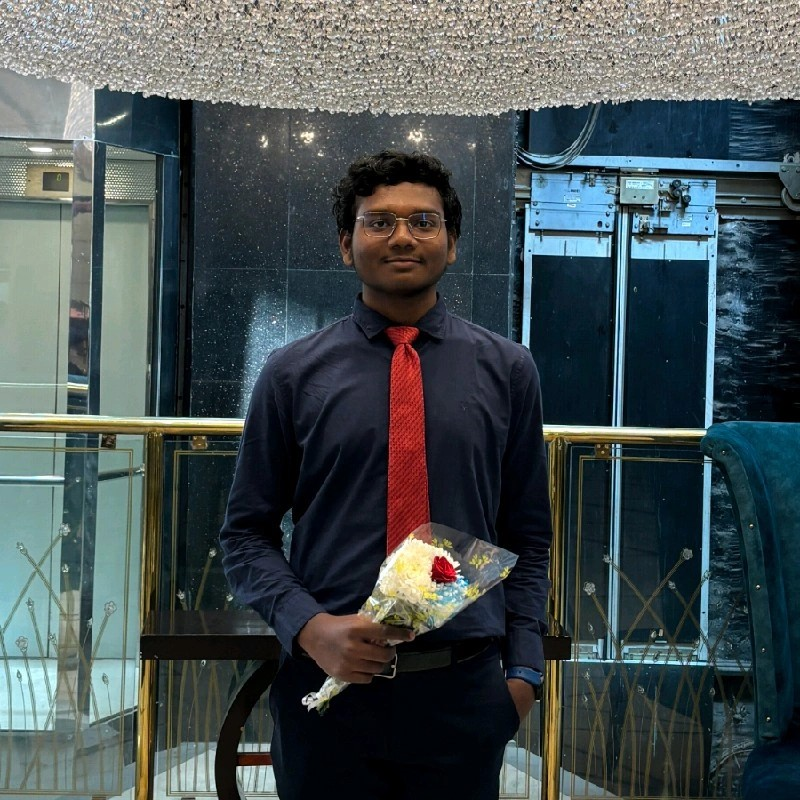

THUNGA SUHYS

OBJECTIVE
As a 19-year-old second-year Biotechnology student, I'm focused on learning and growing both
personally and professionally. I aim to excel in my studies and make valuable contributions to
society. My areas of interest include gene editing with CRISPR, bioinformatics, evolutionary
biology, as well as the fascinating disciplines of chronobiology and molecular biology,
particularly in understanding circadian cycles and disease biology.
EDUCATION
B.TECH | 2022-PRESENT • CURRENT SPI:8.83
Bachelor of Technology in Biotechnology
National Institute of Technology Raipur
INTERMEDIATE(12th) | 2020 -2022 • Percentage: 95.1 in M.P.C Specialization
Narayana Junior College Nellore
Andhra Pradesh
10th STANDARD (SSC) | 2020 • Percentage: 93.2
Veda Vyasa E.M high school Nellore
Andhra Pradesh
SKILLS
BIOTECHNOLOGY SKILLS
- Preparation of Solutions
- Spectrophotometer operation
- Micropipette precision
- Centrifuge, hood, and plates
- Bacteria isolation and staining
- Agarose Gel Electrophoresis (AGE) and
Polyacrylamide Gel Electrophoresis (PAGE)
COMPUTER SCIENCE SKILLS
- Linux administration
- Bash scripting
- Basic C++
- Bioinformatics familiarity
GENERAL SKILLS
- Powerpoint
- Fast typing
- Canva
PROJECTS
Antibiotic Resistance | PowerPoint, Project Management, Research
Contributed to team advancement to the finals in the annual college fest while actively
promoting awareness of superbugs through data dissemination and highlighting CRISPR's
efficacy in effecting genetic modifications in bacteriophages for enhanced effectiveness.
AWARDS & ACHIEVEMENTS
- Ranked class first in 3rd-semester examinations with an SPI of 9.69
- Class highest in communication skills, Microbiology, OOM, Bioprocess Calculations,
Biophysical Techniques, and various labs performed in all the three semesters
- I was awarded a medal for my performance in a chess competition event
- Won 1st prize in ElevateX quiz by I-Cell
- Contributed to team advancement to the finals in the annual college fest while actively
promoting awareness of superbugs through data dissemination and highlighting CRISPR's
efficacy in effecting genetic modifications in bacteriophages for enhanced effectiveness.
HOBBIES
LANGUAGE PROFICIENCY
TELUGU: 🌟 🌟 🌟 🌟 🌟
ENGLISH: 🌟 🌟 🌟 🌟
HINDI: 🌟 🌟 🌟
CONTACT INFO
© THUNGA SUHYS.ALL RIGHTS RESERVED